Log the cocktails you drink and make, keep the recipes you want to try, and see every ingredient you've had, sorted by kind. Everything runs on the phone, with no account and no server.
Nuh uhMehNot badLove it
Drinks
The tab the app opens on: every drink you've had or made, newest first, with its rating on the name line.
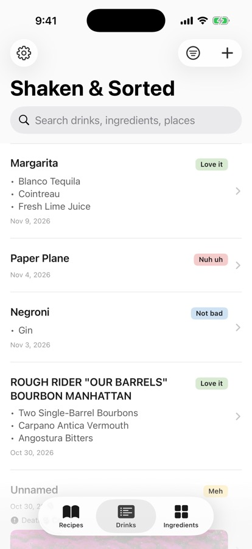
Drinks listBulleted ingredients, date, place and cover photo.
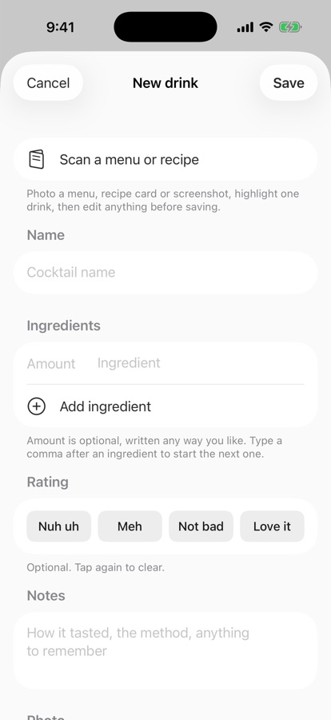
New drinkSave needs a name, ingredient, place or photo.
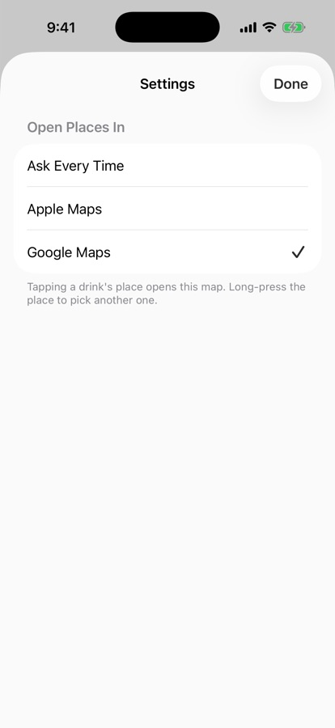
SettingsPick which map app opens a drink's place.
A drink
Tap a drink and edit it in place. Changes save as you go, and Undo puts the page back as it was.
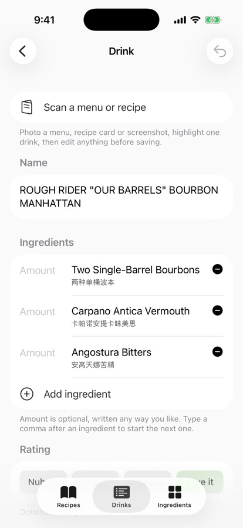
Name and ingredientsAmounts on the left, Chinese name under each ingredient.
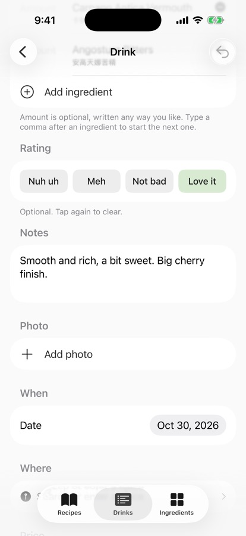
Rating and notesRating sits right under the ingredients.
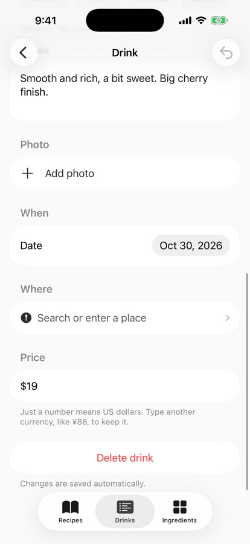
When, where, priceA bare number means US dollars. Delete asks first.
Search & filter
Search by category, subcategory, ingredient, drink or place. Nothing is remembered after the app closes.
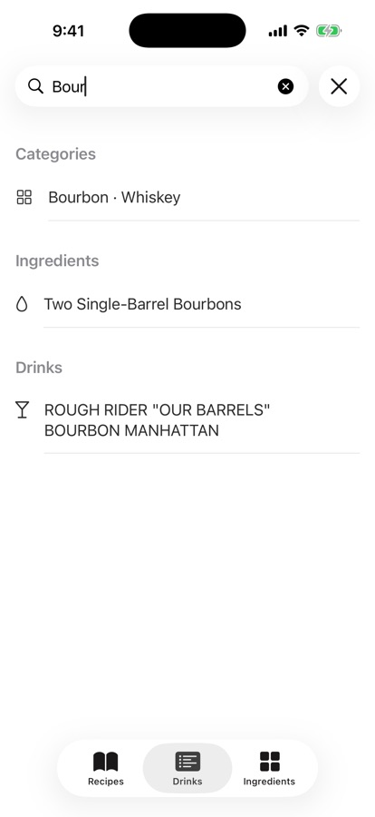
SuggestionsTyping "bour" offers Bourbon, the ingredient and the drink.
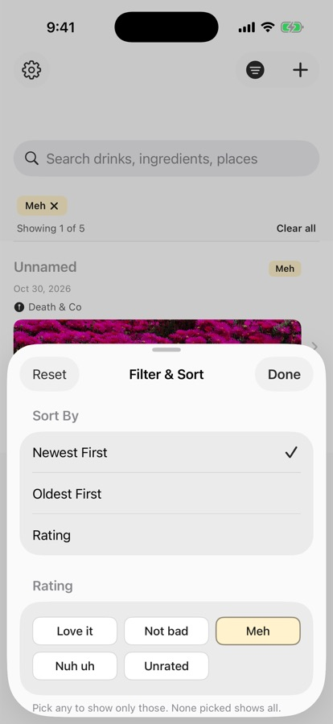
Filter & SortNewest, oldest or by rating; filter by rating and date.
Menu scan
Free and on the phone: swipe over words like a highlighter, then fill in the drink.
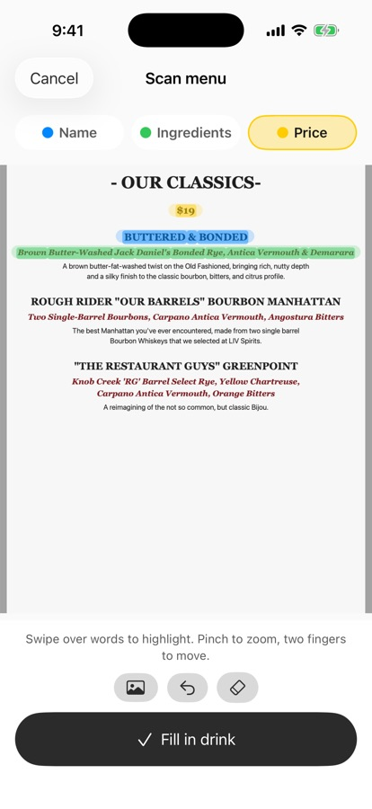
HighlightName in blue, ingredients in green, price in yellow.
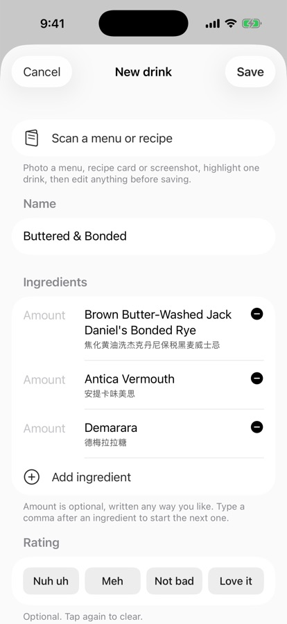
Filled inSplit on the menu's own commas and "&", with Chinese names.
Places
Bars nearby first; a few letters are enough, best match then nearest.
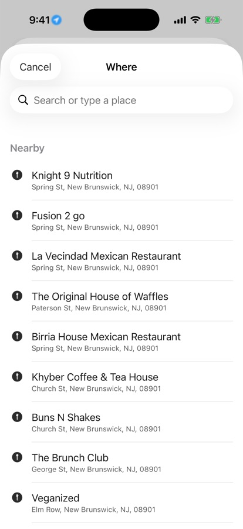
NearbyListed before you type, with location allowed.
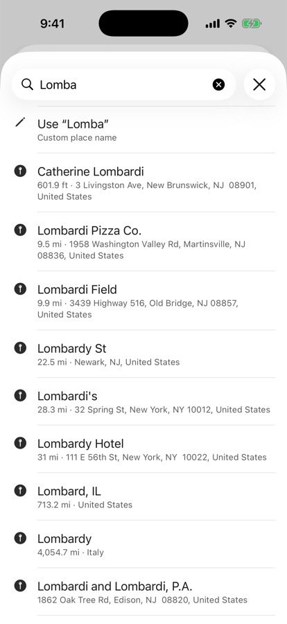
Partial search"lomba" finds Catherine Lombardi, 601.9 ft away.
Recipes
Drinks to make, typed in with a source link. Mark as Made shows the same entry in Drinks.
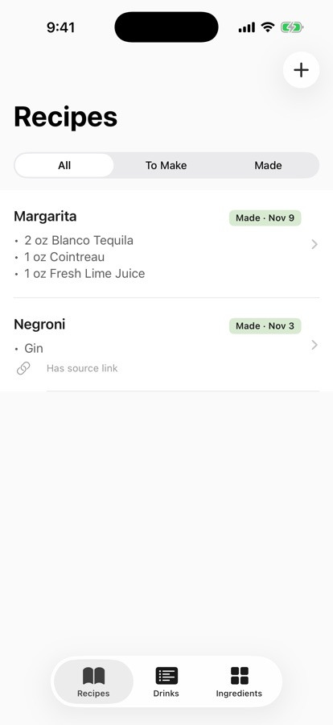
Recipes listAll, To Make or Made.
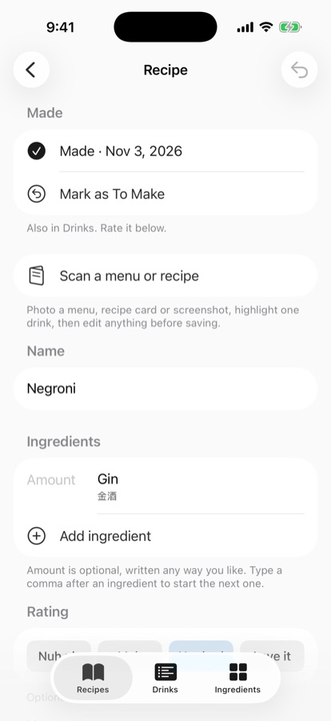
A recipeMark as To Make takes a made recipe back out of Drinks.
Ingredients & palate
Every ingredient, grouped by kind with spirits split further. Five rated drinks unlock your palate.
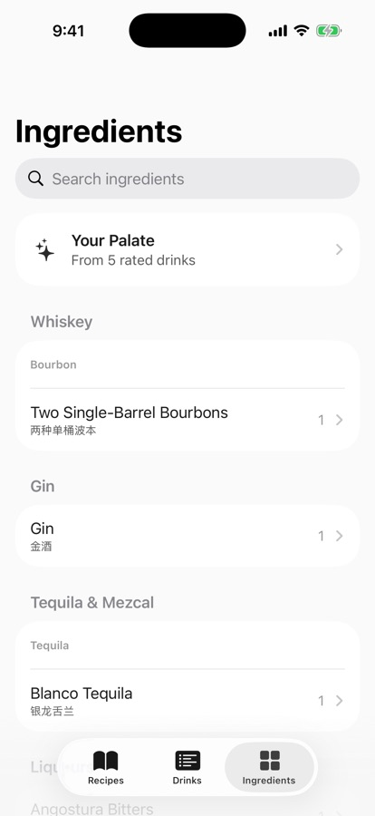
IngredientsCategories, subcategories and Chinese names.
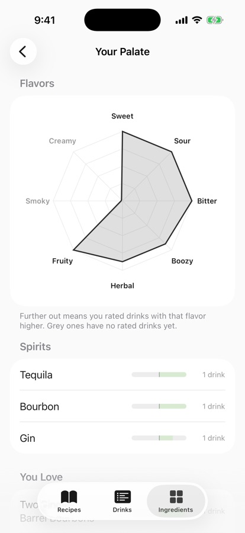
Your PalateFlavor radar and favorite spirits.
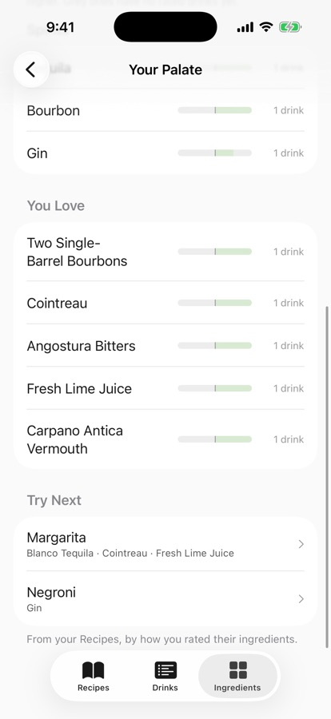
Love, skip, try nextIngredients you love and recipes that suit you.